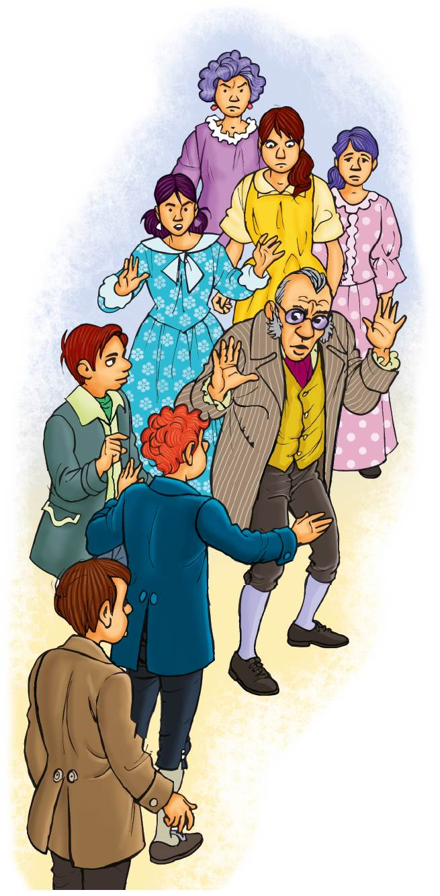

Reflexiono para avanzar
Alumno:
Reflexiono para avanzar
Alumno:
Formen grupos y lean el siguiente texto. Pueden leer varios compañeros, representando cada uno a un personaje.
La campana
Juan Cervera

NARRADOR.- ¡Qué tiempos aquellos! La ciudad de Taramara tenía una vida muy tranquila. Tan tranquila que se despertaba por la mañana al son de las campanas. Pero aconteció que, como la ciudad era muy próspera y todos eran ricos, no se encontraba campanero para sustituir al pobre Gerardo, hacía dos meses muerto de puro viejo.
Entonces se entabló en Taramara un pleito entre los estudiantes y las vendedoras del mercado. Los estudiantes alegaban que a ellos les correspondía tocar las campanas para despertar a la ciudad, porque eran jóvenes y sabían mucho de leyes y de artes. Las vendedoras del mercado decían que a ellas les correspondía, porque tenían que madrugar más que nadie para que tan pronto como despertara la primera ama de casa pudiera ir a comprar, aunque solo fuera chocolate para el desayuno.
Y así fue como los estudiantes designaron a dos representantes suyos, escogidos entre los más inteligentes, para que se encargaran del caso. Y las vendedoras escogieron a dos verduleras de las más sueltas de lengua y con más habilidad.
(Ante el ABOGADO. Hablan reposados.)
FERNANDO.- Señor letrado, necesitamos que defienda nuestra causa. Somos los estudiantes los más indicados para ocuparnos de tocar la campana que despierta a toda la ciudad.
ABOGADO.- O sea.
RAMIRO.- O sea que queremos que nos defienda en el pleito ante las vendedoras del mercado, que dicen que han de ser ellas, porque se levantan más temprano.
FERNANDO.- Y eso no es cierto. Nosotros nos levantamos antes, porque ellas, por la noche, preparan los puestos del mercado, ¿y cómo se van a levantar tan temprano?
ABOGADO.- O sea.
FERNANDO.- O sea que nosotros nos levantamos antes que nadie y a nosotros nos corresponde el deber de anunciar a toda la gente el comienzo del día.
ABOGADO.- O sea.
RAMIRO.- ¿Cómo que «o sea»?
ABOGADO.- Quiero decir que si vosotros queréis ser los campaneros-despertadores de la ciudad porque tenéis más ganas de madrugar que nadie.
FERNANDO.- Bueno, ¿usted qué opina?
ABOGADO.- ¡Ah! Yo no opino. Yo a esas horas duermo.
RAMIRO.- ¿O sea que le tenemos que decir la verdad?
ABOGADO.- La verdad, toda la verdad y nada más que la verdad.
FERNANDO.- Bueno. Pues, la verdad, la verdad es que nosotros decimos que queremos ser campaneros porque nos parece que madrugamos demasiado y lo que pretendemos es ser campanerosdespertadores para dejar dormir un par de horas más a la ciudad... (El ABOGADO sonríe.)
RAMIRO.- ...a la ciudad y a nosotros también.
ABOGADO.- Siendo así, defenderé vuestra causa. Pero que no lo sepa nadie. Será algo difícil.
NARRADOR.- Y el abogado empezó a emborronar cuartillas y folios, hasta que llenó un montón de volúmenes que constituían los derechos de los estudiantes para ser los únicos despertadores de la ciudad. (Se verá un montón de ellos al lado derecho de la mesa del ABOGADO.)
(Ante el mismo ABOGADO. Hablan nerviosamente.)
LEOCADIA.- Señor abogado, necesitamos que defienda nuestra causa. Somos las representantes de las vendedoras del mercado y creemos que nosotras somos las más indicadas para tocar la campana.
ABOGADO.- O sea.
GENOVEVA.- O sea que queremos que nos apoye contra los estudiantes, que dicen que han de ser ellos y eso no es posible.
LEOCADIA.- Porque los estudiantes por la noche andan dando serenatas y cantando por las calles, ¿y cómo van a levantarse tan temprano?
ABOGADO.- O sea.
LEOCADIA.- O sea que nosotras nos levantamos antes que ellos y a nosotras nos corresponde el importante deber de anunciar a toda la gente la salida del Sol.
ABOGADO.- O sea.
GENOVEVA.- ¡Vaya con el «o sea»!
ABOGADO.- Quiero decir si...
LEOCADIA.- Bueno, si el señor abogado no nos traiciona, le diremos que nosotras lo que queremos es dejar dormir a la ciudad un par de horas más, porque ya estamos hartas de levantarnos tan temprano porque la gente nos reclama.
ABOGADO.- (Casi atragantado.) Vaya, en realidad, esto puede ser muy difícil de obtener. Que no se entere nadie que yo defiendo vuestra causa.
NARRADOR.- Y el abogado empezó a emborronar otro montón de cuartillas y de folios que se apilaban encima de su mesa. (Se verá un montón de ellos al lado izquierdo de la mesa del ABOGADO.)
Y como los días iban pasando y las discusiones aumentaban entre la gente porque los dos bandos querían tener el derecho exclusivo de despertar a la ciudad de Taramara, sucedió que llegó a oídos del rey que en Taramara había disturbios. Y mandó un juez justo, prudente y enérgico que congregó a los representantes de las partes contendientes y...
(Están gritando y discutiendo los cuatro representantes de los bandos.)
JUEZ.- (Apareciendo) ¡Silencio! ¡Orden y silencio! Estoy aquí para zanjar de una vez esta cuestión de la campana... y haré estricta justicia. (A los estudiantes.) Hablad vosotros...
FERNANDO.- Señor juez, nosotros pensamos que nos corresponde a nosotros porque...
JUEZ.- (Cortando) Basta ya. Callaos. (Gran sorpresa por parte de ellos y alegría por parte de ellas.) Hablad vosotras...
LEOCADIA.- (Coqueta. Hace una inclinación.) Con permiso. Nosotras creemos...
JUEZ.- (Cortando) Basta ya. Callaos. (Gran sorpresa por parte de ellas y ellos.) ¿Algo más que alegar?
ABOGADO.- (Entrando con dos fardos al hombro ante el pasmo del JUEZ.) Yo tenía que decir que estas son las razones de los estudiantes. (Descarga un fardo y lo vacía.)
JUEZ.- (A los estudiantes) ¿Es vuestro abogado?
FERNANDO y RAMIRO.- Sí, señoría.
LEOCADIA.- Mira el picapleitos.
ABOGADO.- (Descarga el otro fardo y lo vacía.) Y estas las de las vendedoras.
FERNANDO ¿Eh?
JUEZ.- (Perplejísimo. Piensa. Al final se decide.) Que las junten todas en un montón.
ABOGADO.- Pero si se mezclan...
JUEZ.- Juntadlas y mezcladlas. Y esta es mi sentencia: que despierte a la noble y laboriosa gente de la ciudad de Taramara el primero que se levante.
TODOS.- ¡Oh! ¡Qué sabiduría!
JUEZ.- (Satisfecho) Que quede bien claro: el primero que se levante y nadie más.
RAMIRO.- ¿Y qué hacemos con las razones de esos informes?
GENOVEVA.- Eso es, las razones.
JUEZ.- Que las quemen.
(Una humarada las envuelve y envuelve el final de la escena.)
NARRADOR.- Y al día siguiente, cuando todos los habitantes de Taramara dormían plácidamente se despertaron sorprendidos por...
CANTO DEL GALLO.- Quiquiriquí, quiquiriquí, quiquiriquíííí. Y la gente se asomaba a las ventanas...
(Se abrirá la ventana de un estudiante y luego de una vendedora y aparecerán con el típico camisón y gorro de dormir... Y desperezándose.)
RAMIRO.- ¡Qué fastidio!
GENOVEVA.- ¿Tan temprano?
FIN